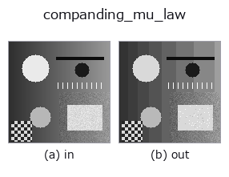

gray op• Data kinds: image → image
• Call: fullseye.apply(img, "companding_mu_law", a=0.5, b=0.5) (2-D model = एक image + दो scalar knobs a,b∈[0,1])

*Figure synthetic 128×128 input पर सच में चलाकर मिला output है। बाईं ओर input, दाईं ओर output। Point clouds ऊपर से देखे गए scatter के रूप में (brightness = z), 1-D series line के रूप में, volumes z दिशा में maximum-intensity projection के रूप में, videos बीच के frame के रूप में, complex images amplitude के रूप में, और जो return values चित्र नहीं बन सकते वे स्वयं values के रूप में दिखाए जाते हैं।*
Knob a को बदलकर (0.1 / 0.5 / 0.9, दूसरा knob default पर):
▸ companding_mu_law: knob a को बदलने का figure (docs site)
Knob b को बदलकर (0.1 / 0.5 / 0.9, दूसरा knob default पर):
▸ companding_mu_law: knob b को बदलने का figure (docs site)
दूसरी images पर भी (synthetic scene / photo / coins। ऊपर की row में inputs, नीचे की row में उनके outputs। Knobs default पर):
▸ companding_mu_law: दूसरी images पर output (docs site)
*चौथा column colour (H,W,3) input है। यह op channels को पार किए बिना colour संभालता है (colour channel को तीसरे spatial axis की तरह convolve नहीं करता)।*
μ-law companding (compand = compress + expand)। a μ है, b bit की संख्या है।
> नीचे का विस्तृत विवरण मूल text में है — सारांश और headings का अनुवाद हो चुका है।
F(x) = ln(1 + mu*x) / ln(1 + mu) で暗部を伸ばしてから量子化し、逆変換で戻す。結果として刻みが暗部で細かく明部で粗くなる —— 目も撮像系も暗部の差に敏感なので、同じビット数で見た目の劣化が小さい。電話の音声符号化(G.711)と同じ原理で、画像では対数的な階調割り当てにあたる。
a は mu = 1 + 254*a(1〜255、a=0 で実質そのまま)、b がビット数 1〜8。
Lloyd–Max との違い: あちらはその画像の分布に合わせるので符号表が画像ごとに変わる。こちらは固定の曲線なので、別の画像・別の装置と値をそのまま比べられる。分布が対数的に偏っているという仮定が当たっていれば近い性能が出て、外れていれば Lloyd–Max のほうが良い。
適用条件(実測つき): 入力が [0,1] で、0 付近に画素が集中しているとき。指数分布の合成画像で一様量子化と比べると、暗部集中なら二乗誤差は 0.57 倍(3 bit)・0.51 倍(5 bit)に下がる。明部集中では逆に 7.7 倍(3 bit)・ 18 倍(5 bit)悪化する —— 白地に暗い傷、という検査画像はまさにこれなので、そのときは 1 - x を通してから当てること。段数が非常に少ないとき(2 bit)は曲線が強すぎて偏った分布でも一様量子化に負ける(実測 1.17 倍)。
• gallery2d_gray_arith family guide
• Sample data catalog (DL URL / license) — 2-D के लिए skimage.data (BSD/public) + synthetic, 3-D के लिए real data sources (Stanford/PDS आदि) के DL URL।
• Operators का स्रोत और संदर्भ — इस op family के मूल research/methods के स्रोत।
• Algorithm का मानक स्रोत (लेखक, वर्ष) और उपयोग ऊपर की family usage guide में दिए गए हैं।
नीचे का program सच में चलता है, यह जाँचा गया है (figure वाला ही input)। Studio की help में यह block buttons बन जाता है, जिनसे इसे वहीं load करके चलाया जा सकता है।
companding_mu_law 0.50 0.50
▸ यह pipeline load करें · Load करके चलाएँ
• gallery2d_gray_arith — py -3.11 examples/gallery2d_gray_arith.py
image को input के रूप में लेते हैं)identity · gaussian · mean_box · bilateral · unsharp · median · min_filter · max_filter
gray)gamma · quantize_uniform · quantize_lloyd_max · quantization_error · dither_ordered · dither_floyd_steinberg · banding_map · invert
*Provenance: ops.py — 2D operator registry. यह per-op note tools/opdocs.py md से अपने-आप generate होता है (हाथ से edit न करें)।*
© 2026 Kazufumi Furuse — Fullseye operator documentation. Licensed under Apache-2.0.